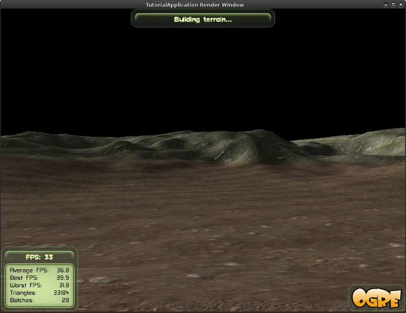

|
OGRE
13.6
Object-Oriented Graphics Rendering Engine
|
|
OGRE
13.6
Object-Oriented Graphics Rendering Engine
|
This tutorial will focus on rendering terrain in a scene. We will cover the basic set up that needs to be done, and we will introduce the use of lighting with terrains. We will also give a brief introduction to simulating a sky using Skyboxes, Skydomes, and Skyplanes. Finally, we will explain how to add a fog effect to the scene.
The full source for this tutorial can be found in samples directory Samples/Simple/include/Terrain.h.
Ignore the FPS stats in the screenshots. They were rendered on an ancient computer.
With older versions of Ogre, we had to use the "Terrain Scene Manager" to render terrain in a scene. This is a separate SceneManager that runs alongside your other managers. The new Ogre Terrain Component doesn't require using a separate manager. Since Ogre 1.7, there are two terrain components: Terrain and Paging. The Paging component is used optimize large terrains. It will be covered in later tutorials. This tutorial will focus largely on the Terrain component.
To set up the terrain we will focus on two main classes:
This separation is used for LOD (Level of Detail) rendering. LOD rendering reduces the resolution for terrain that is farther away from the camera. An individual Terrain object consists of tiles with a material mapped on to them. We will use a single TerrainGroup without paging. Paging will be covered in later tutorials.
Let's first set up our Camera. Add the following to the beginning of setup:
This should look familiar from the previous tutorial.
The last thing we do is to set the far clip distance to zero (which means ''no'' far clipping).
The Terrain component can use a directional light to compute a lightmap. Let's add a Light for this purpose and add some ambient light to the scene while we're at it.
This was also covered in the previous tutorial if you're confused by any of it. The normalise method will make the vector's length equal to one while maintaining its direction. This is something that you will see a lot of when working with vectors. It is done to avoid extra factors showing up in calculations.
Now we'll get into the actual terrain setup. First, we create TerrainGlobalOptions.
This is a class that holds information for all of the terrains we might create - that is why they are called ''global'' options. It also provides a few getters and setters. There are also local options for each TerrainGroup that we will see later in this tutorial.
Next we construct our TerrainGroup object. This will manage a grid of Terrains.
The TerrainGroup constructor takes the SceneManager as its first parameter. It then takes an alignment option, terrain size, and terrain world size. You can read the Ogre::TerrainGroup for more information. The setFilenameConvention allows us to choose how our terrain will be saved. Finally, we set the origin to be used for our terrain.
The next thing we will do is call our terrain configuration method, which we will fill in soon. Make sure to pass the Light we created as a parameter.
The next thing we do is define our terrains and ask the TerrainGroup to load them all.
We are only using a single terrain, so the method will only be called once. The for loops are just for demonstration in our case. Again, we will fill in the defineTerrain method soon.
We will now initialize the blend maps for our terrain.
We get a TerrainIterator from our TerrainGroup and then loop through any Terrain elements and initialize their blend maps - initBlendMaps will also be written soon. The mTerrainsImported variable will be set during the configureTerrainDefaults function when we complete it.
The last thing we will do is make sure to cleanup any temporary resources that were created while configuring our terrain.
That completes our setupContent method. Now we just have to complete all of the methods we jumped over.
The Ogre Terrain component has a large number of options that can be set to change how the terrain is rendered. To start out, we configure the level of detail (LOD). There are two LOD approaches in the Terrain component, one controlling the geometry and the other controlling the texture.
The first call sets the largest allowed error for geometry. It controls the distance in pixels allowed between our ideal terrain and the mesh that is created to render it. A smaller number will mean a more accurate terrain, because it will require more vertices to reduce the error.
The second call determines the distance at which Ogre will reduce the texture resolution. For this, Ogre automatically creates a composite map, where the terrain textures, the blending textures and lighting information are "baked" together at a lower resolution. This way only a single texture lookup is needed when using the low LOD setting. If you increase the distance, then Ogre will use the high LOD setting out to a farther distance, where it computes all lighting effects per-pixel.
In order to generate composite map correctly, we have to pass our lighting information to the terrain.
In the first call, getDerivedDirection will apply all transforms by the parent SceneNodes to our Light's direction. The next two calls should be pretty self-explanatory. We simply set the ambient light and diffuse color for our terrain to match our scene lighting.
The next thing we do is get a reference to the import settings of our TerrainGroup and set some basic values.
We are not going to cover the exact meaning of these options in this tutorial. The inputScale determines how the heightmap image will be scaled up for the scene. We are using a somewhat large scale because our heightmap image is a 8bit grayscale bitmap, that is normalised to the [0; 1] range on loading. You can use floating point raw heightmaps to avoid applying any input scaling and gain a higher precision, but such images require more storage and are not supported by common image viewers.
The last step is adding the textures our terrain will use. First, we resize the list to hold three textures. After that, we set each texture's worldSize and add them to the list.
The texture's worldSize determines how big each splat of texture is going to be when applied to the terrain. A smaller value will increase the resolution of the rendered texture layer because each piece will be stretched less to fill in the terrain.
The default material generator requires two textures maps per layer:
It is recommended that you pre-merge your textures accordingly e.g. using ImageMagick. This way you save storage space and speed up loading. However if you want more flexibility, you can also make Ogre combine the images at loading accordingly as shown below
Now we will tackle our defineTerrain method. The first thing we do is ask the TerrainGroup to define a unique filename for this Terrain. If it has already been generated, then we can call TerrainGroup::defineTerrain method to set up this grid location with the previously generated filename automatically. If it has not been generated, then we generate an image with getTerrainImage and then call a different overload of TerrainGroup::defineTerrain that takes a reference to our generated image. Finally, we set the mTerrainsImported flag to true.
You might have to look at this method for a little while to fully understand it. Make sure you notice that there are ''three'' different defineTerrain methods in use. One of them from TutorialApplication and two of them from TerrainGroup.
We need to write the helper function that was used by defineTerrain in the last step. This will load our terrain.png heightmap. Make sure it has been added to one of your resource loading paths. It is also included in the Ogre Samples directory.
Flipping is used to create seamless terrain so that unlimited terrain can be created using a single heightmap. If your terrain's heightmap is already seamless, then you don't need to use this trick. In our case, the flipping code is also useless, because we are using a 1x1 TerrainGroup. Flipping a 1x1 tile doesn't change anything. It is just for demonstration.
Finally, we will finish up our configuration methods by completing the initBlendMaps method. This method sets up texture-splatting for the different layers we defined in configureTerrainDefaults. For now, you should pretty much view this method as a magic. The details will not be covered in this tutorial. Basically, the method blends the textures based on the height of the terrain at that point. This is not the only way of doing blending. It's a complicated topic and sits right at the verge between Ogre and the things it tries to abstract away.
There are a number of things we will improve. We will add a label to the overlay that allows us to see when the terrain generation has finished. We will also make sure to save our terrain so that it can be reloaded instead of rebuilding it every time. Finally, we will make sure to clean up after ourselves.
First, we need to add a data member to private section of our Sample_Terrain header.
Let's construct this label in the createFrameListener method.
We use the TrayManager pointer that was defined in SdkSample to request the creation of a new label. This method takes a TrayLocation, a name for the label, a caption to display, and a width.
Next we will add logic to frameRenderingQueued that tracks whether the terrain is still loading or not. We will also take care of saving our terrain after it has been loaded. Add the following to frameRenderingQueued right after the call to the parent method:
The first thing we do is determine if our terrain is still being built. If it is, then we add our Label to the tray and ask for it to be shown. Then we check to see if any new terrains have been imported. If they have, then we display text saying that the terrain is still being built. Otherwise we assume the textures are being updated.
If the terrain is no longer being updated, then we ask the OgreBites::TrayManager to remove the our Label widget and hide the Label. We also check to see if new terrains have been imported and save them for future use. In our case, the file will be named 'terrain_00000000.dat' and it will reside in your 'bin' directory alongside your application's executable. After saving any new terrains, we reset the mTerrainsImported flag.
Compile and run your application again. You should now see a Label at the top of the screen while the terrain is being built. While the terrain is loading, you will not be able to press escape to exit and your movement controls will be choppy. This is what loading screens are for in games. But if you exit and run the application a second time, then it should load the terrain file that was saved the first time. This should be a much faster process.

A SkyBox is basically a huge textured cube that surrounds all of the objects in your scene. It is one of the methods for simulating a sky. We will need six textures to cover all of the interior faces of the SkyBox.
It is very easy to include a SkyBox in your scene. Add the following to the end of setupContent:
Compile and run your application. That's all there is to it. The SkyBox will look really grainy because we are using a rather low resolution collection of textures.
The first parameter of this method determines whether or not to immediately enable the SkyBox. If you want to later disable the SkyBox you can call mSceneMgr->setSkyBox(false, ""). This disables the SkyBox.
The third and fourth parameters to setSkyBox are important to understand. We have allowed them to take their default values in our call. The third parameter is the distance between the Camera and the SkyBox. Make this change to your call:
Compile and run your application. Nothing has changed. This is because the fourth parameter sets whether or not to render the SkyBox before the rest of the scene. If the SkyBox is rendered first, then no matter how close it is the rest of your scene objects will be rendered on top of it. Now try this call:
Compile and run your application again. This time you should definitely see something different. Only a small patch of terrain should exist below the camera. Move around and notice what is happening. The SkyBox is being rendered only 300 units away from the Camera and it is no longer being rendered before everything else. This means the SkyBox is drawn over terrain that is farther than 300 units away from the Camera.
You can get a modest performance boost by not rendering the SkyBox first, but as you can see, you'll need to make sure not to cause strange problems like this when doing it. For the most part, leaving these additional parameters at their defaults is good enough. Although you may want to purposely use this strange culling behavior in your application. Try not to get to locked into how things are "supposed to work". If something catches your eye, then play around with it.
Another method of simulating a sky is the SkyDome. The sky texture is still applied to a huge cube that surrounds the scene, but the textures is projected in such a way that it appears to create a dome over the scene. The best way to understand this is to see it in practice. Comment out our call to setSkyBox and add the following line:
Compile and run your application. Make sure to move the Camera to the edge of the terrain so you can better idea of what is being done. The main drawback to this method is that the texture won't cover the bottom face of the cube. You would need to make sure a user could not accidentally see behind the curtain.
The first two parameters of the setSkyDome method are the same as setSkyBox. You can disable the SkyDome in the same way as well. The third parameter is the curvature for the dome projection. It is suggested to use values between 2 and 65. Lower values will produce a better effect at far distances, but higher values will cause less distortion of the texture. The fourth parameter is the number of times the texture will be tiled. This parameter is a Ogre::Real value. You can tile your texture 3.14 times if you want. The last two parameters are the distance and whether or not to draw the SkyDome first. These are the same last two parameters we had with setSkyBox.
The third method for simulating sky is rather different from the first two. This method will use a single plane. The first thing we need to do is create a Plane object. Comment out our call to setSkyDome and add the following:
We've defined a plane by providing a distance from the origin (d) and a vector that is normal to our plane (normal). By choosing the the ''negative'' unit vector along the y-axis we have a plane that is parallel to the ground and facing downwards.
Now we can create the SkyPlane.
The fourth parameter is the size of the SkyPlane (1500x1500 units), and the fifth parameter is number of times to tile the texture.
Compile and run your application. Again, the texture we are using is rather low-resolution. A high definition texture would look much better. It also doesn't tile very well. These issuse can both be fixed by using higher quality resources. The real problem is that it is very likely a user will be able to see the end of the SkyPlane as soon as they move anywhere near the edge of the terrain. For this reason, a SkyPlane is often used most in scenes that have high walls. In these cases, a SkyPlane offers a decent increase in performance over the other techniques.
The SkyPlane has some other attributes that can be used to produce a better effect. The sixth parameter of the setSkyPlane method is the "renderFirst" parameter we covered for the past two methods. The seventh parameter allows us to specify a curvature for the SkyPlane. This will pull down the corners of the SkyPlane turning it into a curved surface instead of a flat plane. If we set the curvature to something other flat, we also need to set the number of segments Ogre should use to render the SkyPlane. When the SkyPlane was a flat plane, everything was one large square, but if we add curvature, then it will require a more complicated geometry. The eighth and ninth parameters to the function are the number of segments for each dimension of the plane.
Let's test this out. Make these changes to our call:
Compile and run the application. This should help the look of our SkyPlane a bit. Go to the edge of the terrain to get a better look at what was done with the curvature.
Like practically everything in graphics programming, the fog effect in Ogre is an illusion. Ogre does not render a fog object into our scene. Instead, it simply applies a filter to our scene. This filter allows the Viewport's background color to show through our scenery to varying degrees based on the object's distance from the Camera. What this means is that your fog will have the same color has your Viewport's background color.
There are two basic types of fog in Ogre: linear and exponential. The difference is the rate at which the fog gets thicker as you move away from the Camera.

We will first add linear fog to our scene. We need to make sure to set our Viewport's background color to our desired fog color. Add the following to setupContent right before our code for setting up the terrain:
Make sure you add this before the terrain code otherwise it won't work. If you were using more than one Viewport, then you may have to iterate through them all by using Ogre::RenderTarget::getNumViewports.
Now we can create the fog.
The first parameter is the fog type. The second parameter is the color we used to set our Viewport's background color. The third parameter is not used for linear fog. The fourth and fifth parameters specify the beginning and the end of the range for the fog. In our example, the fog will begin at 600 units out from the Camera, and it will end at 900 units. The reason this is called linear fog is because the thickness increases between these two values in a linear fashion. Compile and run your application.
The next type of fog is exponential fog. Like the picture suggests, exponential fog grows slowly at first and then gets dense very quickly. We do not set a range for this fog, instead we simply supply a desired density.
Compile and run the application. You can see this creates a different kind of fog effect. It is more like a haze that fills the area surrounding the Camera. There is a variation of the exponential fog that increases at a faster rate.
Compile and run your application to see the difference this makes.
This tutorial covered the basics of using the Ogre Terrain Component. We gave a brief overview of the setup that needs to be done to allow the importing of a terrain heightmap into our scene. We mentioned the notion of a Ogre::TerrainGroup although we only used one Ogre::Terrain object in our "group" for this tutorial. We also made sure to initialize our terrain with a directional light so that we would get specular reflections and shadows cast across our terrain.
We also covered the different methods Ogre offers to simulate a sky in your scene. These included: SkyBoxes, SkyDomes, and SkyPlanes. Finally, we introduced Ogre's fog effects. Fog is rendered by applying a filter to our scene that allows the Viewport's background color to bleed through our scene based on distance from our Camera.
This is a tutorial that you should spend a lot of time experimenting with. All of these features can be configured a great deal, and you can create some very convincing scenes with just what we've covered so far.